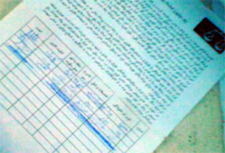

پذيرش > كوچه به كوچه > او ولي امضا كرد! / مازیار سمیعی


 او ولي امضا كرد! / مازیار سمیعی او ولي امضا كرد! / مازیار سمیعی
31 فروردین 1386 - - نسخه قابل چاپ
يك روز مانده به دوازده فروردين و ايرانيان در تدارك يك جشن ديگرند؛ مرد و مردونه مي خواهيم براي كمپين امضا جمع كنيم، به هر حال خلاف جوانمردي است كه اين ضعيفه ها را دست تنها بگذاريم. بايد سايه چند مرد بالاي سرشان باشد! اما متاسفانه در اين شهر«چهار تا مرد پيدا نمي شود» كه هنوز مردانگي داشته باشند، بلكه سه تا پيدا مي شود. آن هم چه سه مردي: كاوه مظفري، علي عبدي و من. خيابان وليعصر وخيابان انقلاب (به سمت ميدان) به واسطه برگزاري جشن مملو از عزيزان نيروي انتظامي است و ترجيح مي دهيم به جهت ديگر برويم. با مغازه هاي روبروي پارك دانشجو شروع مي كنيم.
كفاش بي حوصله ساكت مي ماند تا حرف هاي كاوه تمام شود، دفترچه را مي گيرد و مي گويد: «فردا بياييد، شايد امضا كردم.» محترمانه از مغازه اش بيرون مي رويم. مغازه بعدي با رايحه اسپند و ترياك عطرآگين شده، علي خوش صحبت تر از كاوه است به نظرم، اما شنونده بعيد است چيزي بشنود! سكوت، گرفتن دفترچه و «فردا بياييد،شايد امضا كردم» تقريبا داريم از مغازه ها قطع اميد مي كنيم. پارچه فروش بعدي شمالي است. قبل از هر توضيحي متن بيانيه را مي خواند، بعد خودكارش را در مي آورد و بيانيه را امضا مي كند. بيرون مي آييم، تقريبا شاخ در آورده ايم. مغازه دار بعدي هم شمالي است. استقبال گرمي از ما مي كند. اما مثل بسياري ديگرهم در امور گوناگون صاحب نظر است وهم به كمتر از تغيير رژيم سياسي رضايت نمي دهد! مي گويد بايد به خيابان ها بياييد. البته يادآوري مي كند كه در آن موقع خود و خانواده اش در خانه خواهند ماند. بحث طولاني بي سرانجامي آغاز مي شود كه با ورود آقايي خوش پوش نا تمام مي ماند. وقتي كه مرد هنوز از ما دور است مغازه دار مي گويد: «سرهنگ آگاهي است، ساكت باشيد!» آشكارا رنگ از رويش پريده، بيرون مي رويم. اگر اين يكي تنها به اظهار نظر بسنده مي كرد، پارچه فروش بعدي اساسا يك پژوهشگر همه جانبه است: حقوقدان، جامعه شناس، روانكاو، متخصص امور آمريكاي شمالي، مورخ و... براي ما توضيح مي دهد كه چون زمان پيامبراجاق گاز نبوده و مردم شير و خرما مي خورده اند اما هم اكنون گاز مايع شهري، كپسول و... وجود دارد. سن مسئوليت كيفري براي دختران نه سال نيست و اين در قانون هم آمده است. هم چنين اين مساله را روشن مي كند كه زنان آمريكايي دوست دخترهايي دوست داشتني، معشوقه هايي خواستني و همراهاني هميشگي هستند كه نه تنها مي توان همراه آنان كلي كيف كرد، بلكه دنگ بليط سينمايشان را هم خودشان مي دهند. اما همين معشوقه هاي خوب وقتي تبديل به همسر مي شوند دمار از روزگار شوهرشان در مي آورند «مي دونيد چرا؟ چون زنا همين جوريش پدر مردا رو در مي آرن، واي به حال روزي كه بخواي بهشون امكاناتش رو هم بدي» مساله ليوان آب در بحث هاي او جايگاهي ويژه دارد: «خوب يه ليوان آب مي خوام از زنم، نمي ده، عصبي مي شم، بعدش... تازه رفتم دكتر، گفت حق داري عصباني بشي....» و توضيح مي دهد كه ما چون جوان و دانشجوييم گول حرف هاي چند تا دختر همكلاسيمان را مي خوريم اما همه مردها در زندگي واقعي مشكل «ليوان آب» را با همسرانشان دارند. در نهايت او قوي ترين استدلالش را برايمان رو مي كند: «نامردي زنا از نامردي مردا خيلي نامردي تره!» او كه لابد متخصص علوم تربيتي هم هست مي گويد كه با همه اين حرفا دخترهايش را جوري تربيت كرده كه اگر دامادهايش نگاه چپ به آنها بكنند: «دخترهام طرف رو اين جوري آويزون مي كنند!» (هم زمان يك جور بدي را هم نمايش مي دهد!) دست آخر هم خودكارش را در آورده و بيانيه را امضا مي كند. شايد بد نباشد كه مدتي قيد مغازه ها را بزنيم...
پارك «پارك دانشجو» است اما مملو است از«استاد». حقوقدانان، تحليلگران مسايل خاورميانه، مورخان، جامعه شناسان و صاحب نظران فروتني كه تن عزيزشان را به بيكاري راه راه نيمكت هاي پارك سپرده اند!
علي به شكار جمعيت هاي بزرگ مي رود، كاوه آدم هاي منفرد را در مي يابد و من هم به سراغ زوجين مي روم. چون جمع هاي پسرانه - مردانه به سرعت بحث را به شوخي هايي آشنا مي برند كه در برابرشان هميشه خلع سلاحم. در اين فضاي پر از اعتماد ملي هم كه نمي شود به سراغ جمع هاي دخترانه- زنانه رفت... زوج اول به شدت اميدوارم مي كنند. دختر پيشتربيانيه را امضا كرده است و پسر هم كنجكاو شده و با پرسيدن چند سوال امضا مي كند. مرد ميانسالي هم از راه مي رسد و مي پرسد: «كمپينه؟» خوشحال مي شوم كه او هم پيشتر درباره كمپين شنيده است. از ماهواره. اظهار نظرهايي در مورد حقوق زنان مي كند و البته طبيعتا در مورد آسمان و ريسمان هم. از صحبت هايش مشخص است كه كمونيست است و سلطنت طلب، البته هر يك به درجه اي. ايراني ها اهل اعتدالند! يك برگه را از دستم مي گيرد و به سرعت بيانيه را امضا مي كند و بعد در خلال صحبت هاي من و زوج امضا كننده پيشين مشتاق مي شود ببيند اين متني كه پايش را امضا كرده چيست. به سراغ امضاهاي بالقوه بعدي مي روم. هم زمان توجه ام به يك كچل كرم رنگ كه گويا مامور مستقيم كاوه است جلب مي شود. همچنين يك سرمه اي ريش دار كه به همراه برادري ديگر دورادور و شانه به شانه به شكلي فوق العاده نامحسوس زير نظرمان دارند. به روزگار لعنت مي فرستم كه اين چنين متوهمم كرده است. چند امضايي مي گيرم. كمي دستم مي اندازند. دو بزرگوار هم كه از ماجرا با خبرند با استدلال آشنا و هميشه قاطع «خوب! كه چي بشه؟» جوابم را مي دهند و چند نفري هم مخالفند. علي و كاوه هم همچنان مشغول.
ديرم شده، به سراغ آخرين زوج مي روم. در حالي كه دختر بيانيه را مي خواند، پسر مرا سوال پيچ مي كند و در نهايت با تمسخري كه لالم مي كند مي گويد امضا نمي كند. مخالف هم نيست البته. بلافاصله دختر از كيفش خودكاري در آورده و به جمع يك ميليون امضا كننده ديگر مي پيوندد. هر دو لبخند مي زنند و من با تبريك سال نو به سراغ علي و كاوه مي روم. كاوه هم در توهم من شريك است، توهم دو سه باري از كنارمان عبور مي كند. كچل كرم رنگ لبخند مي زند. منتظر علي هستيم كه پسر و دختر آخري به طرفمان مي آيند. دختر مي گويد مي تواند برگه را ببيند. فكر مي كنم شايد پسر هم به امضا كردن رضايت داده. برگه را كه از من مي گيرند دختر مي پرسد: «اشكالي نداره امضامو خط بزنم؟»
 «نه...» «نه...»
امضايش را خط مي زند و با عصبانيت مي گويد: «اين آقا يكي از همون مردايي كه شما مي گين...» پسر حركت خشني انجام مي دهد، مشت است يا نيشگون يا سقلمه يا... و دختر را دنبال خود مي كشد و از ما دور مي كند. تقريبا خشكمان زده. صداي دختر را از دور مي شنوم كه مي گويد: «سعيد، ديگه محاله كه تا آخر عمرم...»
علي هم مي آيد و با هم از پارك بيرون مي رويم. او هم مانند من و كاوه دچار توهم است كه سه برادر ما را بدجوري نگاه مي كرده اند. يادم مي رود برايش توضيح دهم كه اگرچه اينجا پارك دانشجو است و پاتوق... اما آن سه برادر به حكم برادريشان، لاجرم نگاهي برادرانه به ما داشته اند. عذاب وجدان دارم كه باعث شدم رابطه ميان دختر و پسر آخري خراب شود اما كاوه كه شاخ هايي را كه در مغازه آقاي رشتي در آورده بود همچنان بر سر دارد، در حالي كه دم قرمز رنگش را از شادي مي جنباند، با چنگكي سه شاخه و ريشي سه شاخه مي گويد: «بهتر، اتفاقي بود كه شايد سه سال بعد براشون پيش مي اومد.»
ارسال به
بالاترین
،
توییتر
،
فریندفید
،
فیسبوک
در همين بخش :
 روايت بيست و پنجمين شهريور / نرگس طیبات روايت بيست و پنجمين شهريور / نرگس طیبات
وقتی آتش خاموش شود/فرشته نوبخت
آن گاه که زن شدم / ویژه نامه 8 مارس 1391
چیزی زیر پوست این شهر می جوشد / دلارام علی
گرسنگی / وبلاگ سیب و سرگشتگی
ديگر بخش ها :
طرح یک میلیون امضا
|
مقالات
|
سایت نوشته ها
|
اخبار
|
گزارش كمپين
|
گفت و گو
|
علیه سکوت
|
كوچه به كوچه
|
نامه های شما
|
گزارش ویژه
|
گفتگو با اعضا
|
ویژه سالگرد کمپین
|
تصویر برابری
|
دل آرام علی
|
تریبون
|
مقالات
|
تاریخ شفاهی
|
خارج از چارچوب
|
کتابخانه
|
درباره کمپین
|
کمپین در شهرها
|
کمپین در بند
|
صدای تغییر
|
ویژه 22 خرداد
|
لایحه حمایت از خانواده
|
گالری
|
عشا مومنی
|
امیر یعقوبعلی
|
خدیجه مقدم
|
راحله عسگری زاده و نسیم خسروی
|
پروین اردلان،جلوه جواهری، مریم حسین خواه، ناهید کشاورز
|
زینب پیغمبرزاده
|
سعیده امین، سارا ایمانیان، محبوبه حسین زاده، ناهید کشاورز و همایون نامی
|
احترام شادفر
|
نسیم سرابندی زاده،فاطمه دهدشتی
|
وبلاگ مهمان
|
پرونده خرم آباد
|
دستگیری ها
|
مریم مالک
|
پرستو اللهیاری
|
مهرنوش اعتمادی
|
سمیه رشیدی
|
Other Languages
|
همراهان
|
«فراخوان کمپین ده روز با بهاره هدایت»
| English
|